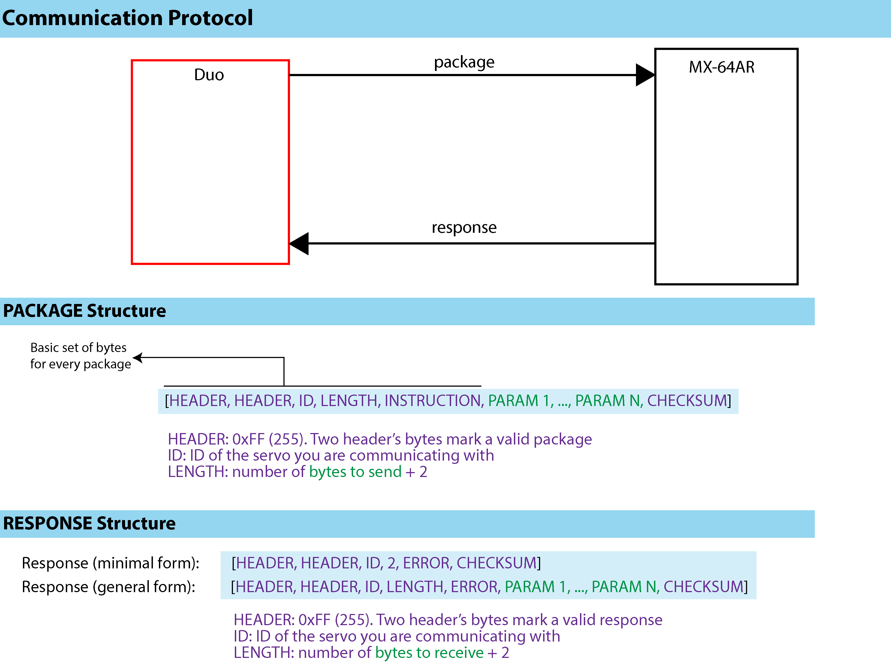

DuoDMXL Code Overview
General idea for communication between microcontroller and Dynamixel servos
Communication is done through a specific protocol for communication which is embedded in the Dynamixel servomotors. The detailed description can be found in ROBOTIS manual. Specifically, to the Communication 1.0 protocol. The idea is that the microcontroller has to send a package with a specific structure (In the Robotis manual they call this instruction packet). Then the servo responds back with another series of bytes, structured in a similar manner. The response (or status packet in Robotis documentation) contains an error report and additional data if it was requested (e.g., we asked for the angle of the servo).
The package sent to the servo and the response obtained must have the following structure:
 Overview of the communication protocol.
Both the package and response always have two bytes as header which must be 0xFF (or 255 as base 10 integer). The instruction byte refers to the action to perform (write, read, etc.). Params is a series of bytes including the address that will be accesed on the servomotor and additional information. Do not worry, DuoDMXL takes care of parsing the package correctly and sending it.
The minimal response obtained for each exhange with the servo will be of six bytes (no data requested). Although the response can be disabled altogether, DuoDMXL assumes that this response is enabled always. In other words, do not turn it off unless you are willing to tweak the source code.